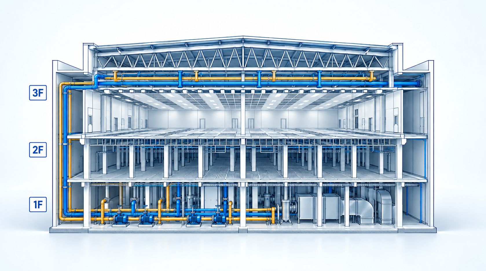
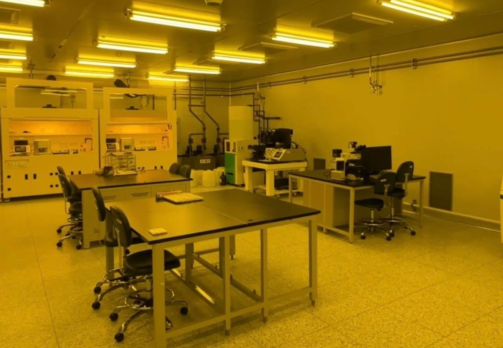
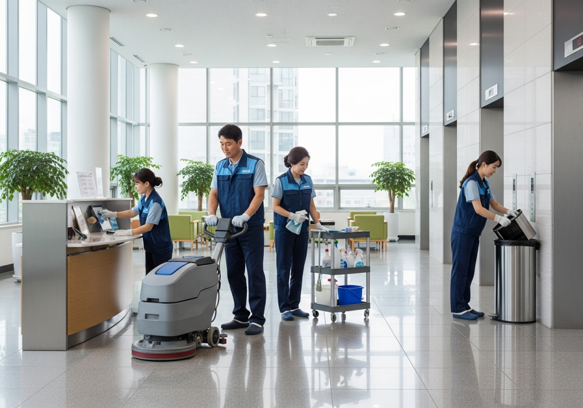
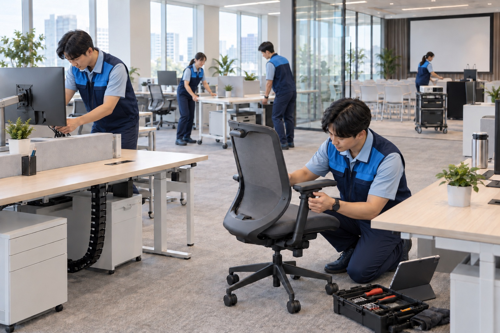

반도체 현장 경험
20여 년간 삼성전자 협력사로 반도체 사업장 미화 수행.
THE SOLRIVER DIFFERENCE
반도체 현장의 오랜 수행 경험을 바탕으로 청정도, 안전, 보안, 지원 범위를 함께 관리합니다.
20여 년간 삼성전자 협력사로 반도체 사업장 미화 수행.
기흥캠퍼스 K1·K2의 생산 라인 11곳을 담당.
ISO 14644 Class 1 등급 라인에서 미화 업무 수행.
기흥캠퍼스 건물 내외부 미화 업무 범위의 인증서 보유.
반도체 라인은 작은 입자도 공정에 영향을 줄 수 있습니다. Solriver는 ISO 14644 Class 1 등급 라인에서 미화 업무를 수행한 경험을 바탕으로 작업 도구의 반입, 청소 순서, 오염원의 이동 가능성을 함께 살핍니다.
작업자는 청정도가 높은 구역에서 낮은 구역으로 오염이 역류하지 않도록 현장별 출입·복장·도구 기준을 따릅니다. 라인 바닥과 벽면뿐 아니라 출입 동선, 에어 샤워, 설비 주변의 상태까지 작업 범위에 포함합니다.
Class 1은 작업 대상 라인의 청정도 등급이며, Solriver의 인증 등급을 뜻하지 않습니다.
생산층, 설비 지원층, 기반 설비층은 바닥 구조와 설비 밀도, 오염 가능 지점이 서로 다릅니다. Solriver는 작업 구역을 층과 기능으로 나누고, 그레이팅 하부나 배관처럼 접근 방식이 달라지는 지점을 별도 범위로 관리합니다.
3층 MAIN FAB에서는 공정 주변 표면과 출입 설비를, 2층 CLEAN SUB FAB에서는 그레이팅과 패널·트레이 주변을, 1층 FACILITY SUB FAB에서는 펌프 스테이지·플레넘·덕트 주변을 중점적으로 살핍니다. 락커룸, 스막 교체 공간, 전실은 생산 구역으로 이어지는 부속 동선으로 관리합니다.
층수와 배치는 현장 건물 구조에 맞춰 적용합니다.
공정 구역의 정밀 미화와 일반 건물 관리, 비품 지원은 서로 다른 작업이지만 같은 현장의 사용성과 가동 환경을 만듭니다. Solriver는 구역별 전문성을 유지하면서 요청 접수와 일정 조정, 작업 후 상태 확인을 연결합니다.
라인에서는 생산·설비 공간의 청정 관리를, 건물에서는 사무실·공용 공간·외곽의 상시 및 계절별 미화를 수행합니다. 비품은 요청과 구매부터 설치·이동·유지·처분까지 이력을 관리하고, 사무실 재배치와 행사를 지원합니다.
Solriver는 기흥캠퍼스 건물 내외부 미화 업무 범위에 대한 ISO 45001 안전보건경영시스템 인증을 보유합니다. 인증의 의미는 현장 위험을 평가하고, 작업 기준과 교육·점검·개선 절차를 지속해서 운영하는 데 있습니다.
전담 안전보건관리자를 중심으로 작업자 건강검진과 사후관리, 현장 점검, 법정 요구사항 검토를 연결합니다. 반기별 법규 검토와 안전보건위원회 논의를 통해 발견된 문제를 작업 절차와 교육 내용에 반영합니다.
작업 기준서(SOP)가 없는 업무는 수행하지 않는 원칙을 두고, 작업 전 현장 브리핑(TBM)에서 당일 위험과 역할을 공유합니다. 작업 중에는 관리감독자가 행동 기반 안전관찰(BBS)을 통해 실제 행동과 작업 조건을 확인합니다.
관리감독자의 현장 관찰은 주 2~3회, 대표의 안전회의는 월 1회 운영합니다. 위험이 확인되면 작업중지권을 행사하고 원인을 검토한 뒤 재개 조건을 정합니다. 신규 화학물질은 물질안전보건자료(MSDS)와 사용 조건을 확인해 교육·보호구·보관 기준에 반영합니다.
SOP: 표준작업절차 · TBM: 작업 전 안전회의 · BBS: 행동 기반 안전관찰 · MSDS: 물질안전보건자료
첨단 제조 현장의 미화 인력은 생산 공간을 일상적으로 드나듭니다. Solriver는 전 직원 보안서약과 정기 교육을 통해 업무 중 알게 된 정보의 취급 기준을 공유하고, 고객사 현장의 반입·출입 규정을 작업 절차에 반영합니다.
월 1회 이상 보안교육을 실시하며 출입 권한, 휴대전화와 저장매체의 반입 제한, 촬영 금지, 자료 반출 절차를 확인합니다. 인력 교체나 작업 구역 변경 시에는 권한과 동선을 다시 점검해 불필요한 접근을 줄입니다.
LINE CLEANING
하나의 FAB 안에서도 층마다 역할과 관리 대상이 다릅니다. 건물 구조에 맞춰 미화 업무를 설계합니다.

라인 바닥·벽면, SUB CLN ROOM, 에어·아이 샤워, 소화기·전원 패널 주변.
그레이팅 하부, 전기 패널 주변, 소음기·트레이 등 설비 인접 공간.
펌프 스테이지와 플레넘 바닥, 배관·덕트, 풍도 바닥.
HOW WE WORK
같은 미화 업무라도 청정 구역, 사무 공간, 설비 지원층에 필요한 기준은 다릅니다. Solriver는 현장의 조건을 먼저 읽고 작업을 설계합니다.
작업을 시작하기 전 구역의 사용 목적, 출입 기준, 동시 진행되는 공사와 설비 작업, 오염 발생 지점, 이용자 동선을 확인합니다. 반도체 라인의 청정도 관리에는 입자 발생을 줄이는 접근이 필요하고, 사무 공간에는 이용자의 업무 흐름을 방해하지 않는 시간과 방식이 중요합니다.
고객사의 출입·안전·보안 규정과 계약 범위를 기준으로 장비, 세정제, 보호구의 사용 가능 여부를 확인합니다. 새 건물이나 용도가 달라진 공간은 기존 작업 방식을 그대로 옮기지 않고 관리 대상과 접근 방법을 다시 정리합니다.
MAIN FAB의 라인 바닥·벽면과 출입 주변, CLEAN SUB FAB의 그레이팅과 트레이, FACILITY SUB FAB의 펌프 스테이지와 배관 주변은 서로 다른 작업 조건을 가집니다. 락커룸과 스막, 전실은 청정 구역으로 이어지는 전환 지점이므로 공정 내부와 연결해 관리합니다.
일반미화는 사무실·화장실·공용 동선·건물 외곽을 사용 패턴에 따라 살핍니다. 비품관리는 구매, 설치, 사용·유지, 이동과 처분을 이어 기록과 실물이 맞도록 관리합니다. 서로 다른 세 분야를 한 캠퍼스의 운영 흐름으로 이해하는 것이 Solriver의 서비스 방식입니다.
작업 후에는 담당 구역의 상태뿐 아니라 통로 확보, 비상 설비 접근성, 사용한 도구의 회수, 물기와 폐기물 처리까지 확인합니다. 반복 오염이나 파손, 누수처럼 청소만으로 해결되지 않는 사항은 시설 담당자에게 구체적인 위치와 상태를 전달해 후속 판단을 돕습니다.
작업 전 안전회의와 관리감독자의 현장 관찰은 그날 달라진 위험을 찾는 통로입니다. 기록과 공유를 통해 작업 방법을 보완하고, 현장의 요청이 바뀌면 범위와 우선순위를 함께 재검토합니다. 실제 절차와 주기는 계약 및 고객사의 운영 기준에 맞춰 정합니다.
FULL-SCOPE SITE CARE
생산 구역의 청정 환경, 구성원이 머무는 공간, 업무에 필요한 물품은 분리된 일이지만 운영에서는 서로 이어집니다.

반도체 라인미화ISO 14644 Class 1 등급 라인에서의 미화 수행 경험을 바탕으로 생산 구역과 설비 지원층의 다른 조건을 이해합니다. 라인 바닥·벽면, SUB CLN ROOM, AIR·EYE SHOWER, 그레이팅 하부, 펌프 스테이지와 플레넘, 락커룸·스막·전실이 관리 범위에 포함될 수 있습니다. 층과 부속 구역을 연결해 출입 동선과 오염 이동 가능성을 함께 살핍니다.

일반미화사무실과 회의 공간, 화장실, 복도와 계단, 건물 외곽을 각각의 이용 방식에 맞춰 관리합니다. 계절별 낙엽, 강우, 제설 대응은 보행 안전과 시설 상태를 함께 확인해야 합니다. 이용자와 작업자의 동선을 나누고, 반복되는 오염과 시설 이상을 구분해 전달하는 것이 일상적인 품질 관리의 일부입니다.
건물·공용 공간 상세 업무 →
비품관리물품의 구매와 등록, 배치, 사용 현황, 유지·수리, 이동, 처분을 하나의 흐름으로 봅니다. 사무실 레이아웃 변경, 물품 설치·철거, 차량 운반, 행사 지원 및 문서 관리 업무는 현장 요청과 일정에 맞춰 연결됩니다. 위치와 수량, 상태를 기록하고 정기 실물 확인을 통해 운영의 누락을 줄입니다.
비품 생애주기 상세 업무 →SAFETY IN PRACTICE
정해진 절차, 작업 전 위험 공유, 물질 정보 확인, 보안 교육이 함께 작동해야 안정적인 서비스가 가능합니다.
SOP(Standard Operating Procedure)는 작업 순서와 보호 조치를 구체화합니다. 참여형 위험성평가에서 확인한 위험은 작업 절차에 반영하고, 절차가 정해지지 않은 위험 작업을 임의로 시작하지 않는 ‘No SOP, No Work’ 원칙을 적용합니다. 작업 조건이 달라지면 기존 절차도 다시 검토해야 합니다.
TBM(Tool Box Meeting)은 당일 작업 장소와 위험 요소, 동시 작업, 보호구와 중지 기준을 팀이 함께 확인하는 시간입니다. 관리감독자는 주 2~3회 현장을 관찰하고, 대표이사 주관 안전회의를 매월 진행합니다. 현장 관찰의 목적은 위험 행동을 지적하는 데 그치지 않고 원인을 찾아 개선하는 것입니다.
MSDS(Material Safety Data Sheet)는 세정제 등 화학물질의 유해성·취급·보관 정보를 확인하는 자료입니다. 신규 물질 반입 전 검토와 현장 게시·교육이 필요합니다. 반복 작업과 중량물 이동에서는 근골격계 부담을 살피고, 건강검진 결과에 따른 사후 관리도 함께 고려합니다.
반도체 사업장은 작업 구역별 출입 권한과 기기 반입 기준이 엄격합니다. 전 직원 보안서약과 월 1회 보안교육을 운영하고, 정보 유출 가능 기기의 반입 제한 기준을 교육합니다. 작업 중 알게 된 공정 정보와 현장 사진·문서는 승인된 목적 밖에서 사용하지 않습니다.
※ SOP: 표준작업절차(Standard Operating Procedure) · TBM: 작업 전 안전회의(Tool Box Meeting) · MSDS: 물질안전보건자료(Material Safety Data Sheet)
FIELD APPLICATION
기흥·화성캠퍼스의 라인과 건물, 업무 지원 공간에서 쌓은 경험을 새로운 현장의 조건에 맞춰 적용합니다.
기흥캠퍼스 K1·K2의 11개 생산 라인 수행 경험은 하나의 표준을 모든 건물에 동일하게 적용할 수 없다는 점을 보여 줍니다. 각 라인은 출입 경로, 설비 배치, 작업 가능 시간과 지원 공간이 다릅니다. K1의 1·3·5 라인과 SR1·NRD-K, K2의 6-1·6-2·6-3 및 S1-A·B·C 관련 구역에서 작업해 왔습니다.
수행 경험은 새로운 현장 계획의 출발점이지만, 현재 관리 범위와 세부 공정은 현장별 승인과 계약 조건으로 정해야 합니다.
신규 건물의 초기 셋업에는 일반적인 상시 관리와 다른 준비가 필요합니다. 공간별 오염원 파악, 출입 동선, 장비와 비품 배치, 작업 전 안전 기준, 부속 구역의 연결을 확인해야 합니다. 초기 정리 이후에는 이용량과 설비 운영 상태를 반영한 지속 관리 계획으로 전환됩니다.
신규건물(SR3)의 초기 셋업을 지속 관리로 연결하고, 구역별 인계 일정에 맞춰 작업 방식과 인력을 조정합니다.
라인미화와 일반미화가 공간 상태를 관리한다면, 비품관리는 그 공간을 사용하는 조직의 운영을 돕습니다. 기흥·화성캠퍼스에서 비품 지원 업무를 수행해 왔습니다. 구매와 등록, 설치·이동, 행사와 총무 업무를 연결해 현장의 요청이 누락되지 않도록 하는 방식입니다.
세 서비스가 공유하는 현장 정보는 공간 변경이나 신규 구역 오픈 때 유용합니다. 업무 권한과 처리 기준은 고객사의 절차에 따라 명확히 구분합니다.
DETAILS THAT MATTER
라인미화·일반미화·비품관리를 공간과 목적에 따라 나누어 관리합니다. 각 업무는 생산·사무·시설 운영을 지원하는 하나의 흐름으로 연결됩니다.
MAIN FAB에서는 라인 바닥과 벽면, SUB CLN ROOM, 반입구, AIR SHOWER와 EYE SHOWER 주변을 살핍니다. 생산 설비 주변에 쌓이는 오염을 줄이는 동시에 소화기와 전원 패널이 언제든 접근 가능한 상태인지 확인하는 관점이 필요합니다. 라인의 통행과 장비 이동이 우선이므로 작업 구간과 시간은 현장 담당자와 맞춥니다.
락커룸은 외부 복장과 작업 복장이 전환되는 곳입니다. 락커장과 신발장, 바닥·벽면을 관리하고 손 세정과 에어 샤워 주변의 청결을 확인합니다. SMOCK은 방진복을 교체하는 공간이므로 이용자가 집중되는 시간과 공정 출입 동선을 고려합니다. 전실과 CLEAN E/V, 계단은 여러 구역을 연결하므로 도구의 구역 간 혼용과 작업 중 통행 방해를 줄이는 방식이 중요합니다.
이 구역의 미화는 생산 장비 내부를 임의로 다루는 업무와 구분됩니다. 설비 접촉 범위, 허용 세정 방법, 반입 물품은 고객사 기준과 승인 절차가 우선입니다. 작업 중 확인된 이상은 미화 범위 안에서 해결할 사항인지 설비 담당자의 판단이 필요한 사항인지 나눠 전달해야 합니다.
CLEAN SUB FAB에는 그레이팅 하부, 전기 패널 주변, 소음기와 트레이 같은 설비 인접 요소가 있습니다. 표면의 오염뿐 아니라 개구부, 낙하물, 전기 설비와 작업 동선이 동시에 문제가 될 수 있어 접근 조건을 먼저 확인해야 합니다. 먼지와 이물질이 상부 생산 환경으로 이동할 수 있다는 점도 작업 순서를 설계할 때 고려합니다.
FACILITY SUB FAB에서는 펌프 스테이지와 PLENUM 바닥, 각종 배관과 DUCT, 기둥·벽면, 풍도 바닥 등이 주요 관리 대상입니다. 설비 밀집 공간은 시야와 이동이 제한되고 부딪힘이나 걸림 위험이 커집니다. 통로와 비상 설비를 확보하고 적합한 도구를 선택해야 하며, 설비 운전을 방해하지 않는 범위에서 작업합니다.
부속 구역까지 포함하면 하나의 FAB 안에서도 작업 조건은 여러 번 바뀝니다. 따라서 층별 명칭만으로 관리 범위를 단순화하기보다 실제 위치, 접근 경로, 표면 재질, 고객사 승인 범위를 함께 기록하는 편이 정확합니다. 층별 관리 범위는 현장의 건물 구조와 설비 배치에 맞춰 정합니다.
사무실은 업무가 계속되는 공간입니다. 문서와 개인 물품을 임의로 이동하지 않고, 회의·출입 시간과 구성원의 동선을 고려해 작업합니다. 바닥이나 가구 주변의 오염만이 아니라 반복적으로 손이 닿는 출입부와 공용 설비의 상태도 살펴야 합니다. 청소 중 발견되는 누수나 파손은 미화 결과와 구분해 시설 담당자에게 전달할 수 있어야 합니다.
화장실은 위생과 편의가 동시에 요구됩니다. 세면대, 변기, 접촉 부위, 배수 주변을 관리하고 소모품과 물기 상태를 확인합니다. 복도와 계단, 승강기는 통행량이 많아 작업 중에도 이용자 안전을 우선해야 합니다. 청소 장비와 표지의 위치, 바닥의 미끄럼 가능성, 비상 동선 확보를 함께 확인하는 것이 중요합니다.
건물 외곽의 요구는 계절에 따라 달라집니다. 낙엽은 배수와 출입부 오염에 영향을 주고, 강우 후 물기는 미끄럼 위험을 높이며, 겨울철 결빙은 통행을 어렵게 만듭니다. 같은 구역이라도 날씨와 이용량에 따라 우선순위를 바꾸고, 제설 자재가 포장면이나 설비에 미치는 영향도 현장 기준에 맞춰 검토합니다.
일반미화 상세 보기 →비품 관리의 출발점은 지금 무엇이 어디에 있는지 아는 일입니다. 구매 요청이 들어오면 기존 재고와 사용 목적, 설치 위치를 확인하고, 입고 후에는 수량과 상태를 기록합니다. 사용 중 수리와 이동이 생기면 장부도 함께 바뀌어야 합니다. 정기적으로 실물과 장부를 대조하고, 내용연수 1년 이상의 물품은 자산 관리 기준에 따라 분류합니다.
사무실 레이아웃 변경은 파티션과 물품을 옮기는 일만으로 끝나지 않습니다. 새 배치가 통로와 비상구를 가리지 않는지, 이동 중 파손 위험은 없는지, 설치 뒤 이용자가 바로 사용할 수 있는지 확인해야 합니다. 차량으로 물품을 옮길 때에는 무게와 부피, 적재 고정, 반입 경로, 도착지의 승강기와 출입 절차를 함께 살펴야 합니다.
행사와 총무 지원에서는 일정과 인계가 특히 중요합니다. 요청 내용, 준비물, 설치 시간, 행사 종료 후 회수와 원상 정리의 책임 지점을 미리 정하면 현장의 혼선을 줄일 수 있습니다. 보안 관련 열쇠나 문서처럼 일반 비품과 다른 통제가 필요한 물품은 고객사의 권한과 보관 기준을 따릅니다.
비품관리 상세 보기 →FROM SETUP TO STABLE OPERATIONS
신규 건물과 기존 운영 구역은 같은 방식으로 관리할 수 없습니다. 필요한 정보를 확인하고, 범위를 정하고, 운영 중에 다시 조정하는 단계가 필요합니다.
건물의 층별 용도, 공정 구역과 사무 공간의 경계, 출입 조건, 설비 작업 일정, 기존 청소·비품 관리 방식부터 확인합니다. 청정 구역은 오염 가능성과 도구 반입 조건을, 일반 공간은 이용자의 이동과 시설 상태를, 비품관리는 보유 물품과 기록 체계를 각각 살핍니다.
초기 확인에서는 작업자가 접근 가능한 구역과 고객사 승인이 필요한 구역을 분명히 구분해야 합니다. 청소로 해결할 수 없는 누수·파손·설비 이상은 별도 관리 항목으로 나누고, 누가 판단하고 조치하는지 확인합니다.
구역별 관리 대상과 작업 주기, 투입 도구, 보호구, 작업 가능 시간, 완료 확인 방법을 정리합니다. MAIN FAB의 라인 바닥·벽면과 전실, SUB FAB의 설비 지원 공간, 사무실과 건물 외곽은 업무 목적이 달라 같은 점검표를 그대로 적용하기 어렵습니다.
기준은 고객사의 운영·보안 규정과 계약 범위를 전제로 합니다. 특히 클린룸 작업은 청정도 자체를 보증한다는 표현보다 현장의 등급과 절차에 맞춰 미화가 수행되는 조건을 명확하게 정의하는 것이 중요합니다.
신규 건물에서는 공사 이후의 잔류 오염, 출입 동선, 락커·스막·전실의 연결, 장비와 소모품의 보관 위치를 확인합니다. 비품이 반입되는 시점과 청소가 진행되는 시점이 겹치면 재오염이 생길 수 있으므로 작업 순서와 인계 지점을 정합니다.
신규건물(SR3)의 셋업은 일회성 정리에 그치지 않고 지속 관리 체계로 이어집니다. 초기 상태를 파악한 뒤 실제 이용과 설비 가동이 시작되면 관리 구역과 우선순위를 다시 살핍니다.
운영 단계에서는 계획한 업무의 수행 여부뿐 아니라 반복 오염, 도구와 소모품의 적정성, 이용자 불편, 안전 위험을 함께 확인해야 합니다. 작업 중 발견한 사항은 위치와 상태를 공유하고, 즉시 조치와 시설 부서의 후속 조치가 필요한 항목을 나눕니다.
라인미화·일반미화·비품 지원은 서로 다른 담당 업무이지만 한 공간의 운영 상황을 공유합니다. 사무실 재배치나 신규 구역 오픈, 계절 변화처럼 조건이 바뀌면 관련 팀의 작업 방식과 관리 범위도 다시 조정할 수 있습니다.
현장 정보 확인 → 작업 기준 수립 → 안전·보안 검토 → 구역별 수행 → 결과 확인과 개선의 흐름을 기본으로 설명합니다. 실제 절차와 책임 범위는 고객사 규정과 계약 내용에 따라 달라집니다.
PRACTICAL KNOW-HOW
반도체 현장의 미화와 지원 업무는 단순히 넓은 면적을 관리하는 일이 아닙니다. 오염 경로, 설비의 민감도, 이용자의 흐름과 승인 절차를 함께 이해해야 합니다.
입자는 작업자, 도구, 소모품, 출입 동선을 따라 이동할 수 있습니다. 그래서 제조 라인의 미화 범위를 설명할 때 바닥과 벽면만이 아니라 락커룸, 방진복 교체 공간, 전실, 에어 샤워, 클린 승강기까지 함께 살펴야 합니다. 생산층 안의 작업 결과가 출입 과정에서 다시 흔들리지 않도록 구역 간 전환 지점을 이해하는 것이 중요합니다.
고객사가 정한 청정도 등급은 공간의 운영 기준입니다. Solriver는 ISO 14644 Class 1 등급 라인에서 미화 업무를 수행한 경험이 있습니다. 청정도 등급은 작업 공간에 적용되는 기준입니다.
FAB의 2층과 1층에는 생산 공간을 지탱하는 그레이팅, 배관, 덕트, 펌프 스테이지, 플레넘 등이 있습니다. 이곳은 보행면과 개구부, 전기 설비, 배기 흐름 등 일반 실내와 다른 요소가 많습니다. 접근 가능 여부와 보호 조치를 먼저 확인하고, 고객사의 승인 범위 밖에서 설비를 조작하지 않는 것이 원칙입니다.
그레이팅 하부나 트레이 주변처럼 시야와 접근성이 제한되는 곳은 작업 방법을 미리 정해야 합니다. 작업 완료 후에도 도구가 남지 않았는지, 비상 설비와 통로가 가려지지 않았는지 확인하는 과정이 필요합니다.
사무실과 공용 시설은 이용자가 머무는 동안에도 기능해야 합니다. 화장실의 위생 상태와 소모품, 복도·계단의 통행 안전, 외곽 보행로의 낙엽과 결빙은 각각 다른 우선순위를 가집니다. 같은 오염이라도 업무 중인 사무실과 비어 있는 회의실에서는 작업 시간과 접근 방식이 달라집니다.
비품관리 역시 물품 자체보다 사용 맥락이 중요합니다. 요청 부서, 설치 위치, 기존 재고, 운반 경로, 설치 후 사용할 사람을 확인하면 불필요한 이동과 누락을 줄일 수 있습니다.
한 번의 작업을 잘 끝내는 것과 같은 품질을 지속하는 것은 다릅니다. 작업 범위를 정하고, 위험성평가와 SOP를 연결하고, TBM에서 당일 조건을 공유하면 팀이 같은 기준으로 움직일 수 있습니다. 관리감독자의 관찰과 월간 안전회의는 현장의 차이를 다시 확인하는 통로입니다.
시설 이상과 업무 요청, 비품 이동 기록, 반복되는 오염 지점을 정리하면 다음 판단의 근거가 됩니다. 기록은 문서를 늘리기 위한 것이 아니라 담당자 간 인계를 정확하게 하고 개선이 필요한 곳을 보이게 하기 위한 수단입니다.
※ SOP: 표준작업절차(Standard Operating Procedure) · TBM: 작업 전 안전회의(Tool Box Meeting)
FIELD EXPERIENCE
반도체 캠퍼스의 라인, 신규 건물, 업무 지원 공간에서 경험을 쌓아왔습니다.
K1·K2의 주요 생산 라인과 NRD-K 등 공정 구역 관리.
신규건물(SR3)의 환경 셋업 및 지속 관리 업무.
현장과 사무 공간에 필요한 비품 지원 업무.
수행 경험은 이전 현장의 방식과 인력을 그대로 옮겨오는 근거가 아닙니다. K1·K2의 라인별 출입 조건과 층별 설비 구성, 신규건물(SR3)의 셋업 단계, 기흥·화성의 비품 지원은 각각 다른 과제를 보여 줍니다. Solriver는 이러한 경험을 바탕으로 새 현장의 작업 구역과 이용 동선, 위험 요소, 승인 절차를 먼저 확인하는 접근을 설명합니다.
20여 년의 반도체 현장 경험, 11개 라인 수행 경험과 ISO 45001 인증을 바탕으로 작업 범위와 시간, 안전 조치, 인계 방식을 구체화합니다. 고객사의 공정 정보와 보안 기준을 준수하며 현장 조건에 맞는 관리 체계를 운영합니다.